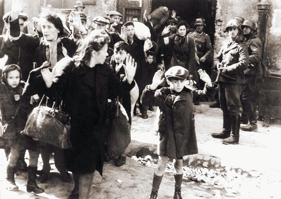

|
 | Ez itt valószínûleg a
legismertebb fénykép a holokauszt történetébõl. Egy rémült és valószínûleg halálra ítélt kisfiú
felemelt kézzel áll egy fegyveres német katona elõtt, a varsói gettó számos más zsidó lakójával
együtt.  Erwin
Knoll, a mértékadó The Progressive címû havilap
szerkesztõje a következõképpen foglalta össze a kép mondanivalóját: "Ez a kép maga a holokauszt szimbóluma. Egy zsidó kisfiú rémülten néz
maga elé, kezei felemelve, körülötte pedig nácik. Ez a kép akkor készült, amikor a zsidókat
összegyûjtötték, és elszállították kivégzésre az 1943-as gettólázadás után. A háttérben további
zsidók láthatóak, szintén felemelt kézzel. Tudjuk, hogy röviddel azután, hogy a kép elkészült,
valamennyien meghaltak. Ez a kép felbukkan archívumokban, kiállításokon, magazinokban és
újságcikkek illusztrációjaként, televíziós dokumentumfilmekben és történelemkönyvekben. Én magam
is sok százszor láttam már." A képet eredetileg több tucat másik fotóval együtt egy
SS-jelentéshez csatolták, amely az 1943 áprilisában és májusában a varsói gettó területén
lefolytatott rendõrségi akciókról szólt. A háború óta eltelt évtizedek során milliószám
sokszorosították számtalan könyv, magazin és film számára, afféle "általános"
holokauszt-illusztrációként. Életnagyságú változatával a világ minden holokauszt-múzeumában és
kiállításán találkozhatunk. A világon milliókkal hitették el, hogy a képen látható, ijedt
fiúcskát röviddel a kép elkészülése után meggyilkolták. "Megszakad a szív ettõl a képtõl", írta a The Washington Post, "mert látjuk, hogy ez a gyermek, akárcsak zsidók milliói, rövidesen
elpusztul a náci gyilkosok kezétõl."A képet 1979-ben egy vezetõ amerikai hetilap
is felhasználta egy szenzációs holokauszt-történeteket tartalmazó könyv reklámkampányában az
alábbi aláírással: "A neve Arthur Chmiotak. Idén májusban lenne
42 éves, de elgázosították egy náci koncentrációs táborban még a tizedik születésnapja elõtt.
Miért? Mert »nemkívánatos« volt, gyomnövény Hitler tökéletes árja virágainak kertjében. Egy a hatmillió áldozat
közül..."Egy gyakran használt német iskolai tankönyv a következõt írja: "Varsó, 1943 májusa. A zsidó gettó felszámolása és lakóinak elszállítása
elgázosításra a treblinkai haláltáborba."A legendák
ellenére azonban a "gettófiú" nem halt meg. Túlélte a háborús internálást Varsóban és egy
német koncentrációs táborban. Több évtizeddel a kép elkészülte után Cvi C. Nussbaum New York-i
orvos felfedte, hogy õ a kisfiú a híres fényképen. - Emlékszem, egy katona állt elõttem,
és rám parancsolt, hogy emeljem fel a kezem - emlékezett vissza Nussbaum. Miután a bácsikája
közbelépett, megengedték, hogy a családjával tartson. A gyermek Nussbaumot családtagjaival
együtt a Bergen-Belsen-i táborba szállították, Németország nyugati részében. A háború után
Izraelbe költözött, majd onnan az Egyesült Államokba 1953-ban. 1990-ben New York államban,
Rockland megyében élt. Nussbaum állítása kiállta a legkritikusabb vizsgálatokat is. Arcán
még ennyi évtized után is felismerhetõek az egykori kisfiú vonásai. A zsidó
holokauszt-történészek, akik a fényképet régóta valamiféle "szentírásként" tisztelik,
természetesen nem örülnek Nussbaum felfedésének, írta a New York
Times, mivel "meg vannak róla gyõzõdve, hogy a kép
szimbolikus ereje szertefoszlik, ha a nagyközönség megtudja, hogy a fiú valójában nem halt meg."
Nussbaumot meglepték ezek az aggályok. - Sosem feltételeztem, hogy mind a
hatmillió zsidó áldozatot belelátják ebbe az egy képbe - mondta. - Nekem ez csak egy kellemetlen
incidens, amelyben részem volt, ennyi és nem több. Dr. Lucjan Dobroszycki, a Yivo
Intézet, egy New York-i zsidó történelmi kutatóközpont munkatársa leszögezte, hogy "ez a kitûnõ fénykép, amely a holokauszt legdrámaibb pillanatában
készült, nagyobb felelõsséget követel a történészektõl, mint bármely másik. Túlságosan szent
ahhoz, hogy az emberek csak úgy azt csináljanak vele, amit akarnak." Más szavakkal,
Dobroszycki szerint a történelmi igazságnak nem szabad elhomályosítania az érzelmi hatást és
csökkenteni annak hatékonyságát. Mint a huszadik század egyik legmegindítóbb fényképe, ez a
kép valóban sokat elmond az európai zsidóság második világháború alatti tragikus sorsáról. De
egészen másképp, mint a legtöbben gondolják. Eredeti cikk: Mark Weber: The 'Warsaw Ghetto Boy'
The Journal of Historical
Review
1994
március-április (Vol. 14. No. 2.), 6-7.oldal
Bombagyár kommentár: Dr. Tsvi C.
Nussbaum ma is él és praktizál. Nevére rákeresve megtalálhatjuk például személyes
profiloldalát az orvosokat bemutató vitals.com oldalon, de a Wikipedián is olvashatunk róla.
Külön érdekesség, hogy amikor röviddel a koncentrációs tábor felszabadulása elõtt beteg lett, egy német orvos mentette meg az
életét - noha a mese szerint a németek a táborok feladása elõtt a beteg rabokat mind
agyonlõtték.
Forráslista:1. Erwin Knoll, The Uses of the Holocaust, The Progressive, 1993 július, 15.
oldal
2. A Stroop-jelentésben a
következõ szöveg olvasható a kép alatt: "Erõszakkal kirángatva a bunkerbõl". Az 1943-ban írt
Stroop-jelentést bizonyítékként terjesztették be a nürnbergi perben 1945-46-ban, és a
42-kötetes IMT "kék sorozatban" a 26. kötetben található. A nürnbergi peranyagban a száma:
1061-PS (USA-275). A jelentés hasonmás kiadása a következõ címmel jelent meg: A
Stroop-jelentés: A varsói zsidónegyed nincs többé! (The Stroop Report: The Jewish Quarter
in Warsaw Is No More! New York: Pantheon, 1979). 3. C. Harris, Warsaw Ghetto Boy:
Symbol of the Holocaust, The Washington Post, 1978 szeptember 17, 1.
oldal
4. A pittsburghi Pleasant
Valley Press hirdetése Christian Bernada 13 kötetes könyvsorozatáról a National Enquirer címû lapban, 1979 április 3. 1993-ban egy
Associated Press-kiadványban a következõ volt a képaláírás: "Német katonák kiterelnek egy
zsidó csoportot, köztük az Arthur Schmiontakként azonosított kisfiút a varsói gettóból
1943-ban." Orange County Register, 1993 április 18, 1993, 23. oldal, Savananah
News-Press, 1993 április 18. 5. Az
idézet helye: D. National-Zeitung (München), 1993 április 16, 11. oldal. 6. D. Margolick, Rockland Physician Thinks He is Boy in Holocaust Photo on Street in Warsaw,
The New York Times, 1982 május 27. pp. B1, B2; P. Moses, Haunting Reminder, New York Post, 1990 február 20, 5. oldal. 1978-ban
egy Israel (Issy) Rondel nevû londoni üzletember is azt állította, hogy õ a "fiú a varsói
gettóból". Lásd: J. Finkelstone ‘Ghetto boy’
lives here, Jewish Chronicle (London), 1978 augusztus 11, 1-2. oldal; C.
Harris, Warsaw Ghetto Boy: Symbol of The Holocaust, The
Washington Post, 1978 szeptember 17, L1, L9. Az állításról késõbb bebizonyosodott, hogy
hamis. Lásd: E. Kossoy, The boy from the ghetto, The
Jerusalem Post, 1978 szeptember 1, 5. oldal. 7. D. Margolick, The New York Times, 1982 május 28, B1,
B2. (Idézve fent.) 8. The New York
Times, 1982 május 28, B1, B2.
| | vissza a fõoldalra |  |
| 1 2 3 4 5 6 7 8 9 | |  | | | | | | | | | | | | | | | | | | | | 1 2 3 4 5 6 7 8 9 | |
|


túraszervezõ
túra-rss
mi ez?

legjobbak
legolvasottabbak
tartalomjegyzék
rss feed

AboryM
Caesar
Count Grishnackh
cscsabi
eürdüngh
Feki
GyalogKakukk
Ishukone
Kadzseszka
LACI1993
Mini
Muska
Rommel
Segi
Takezó
tommylee
vikcee
|